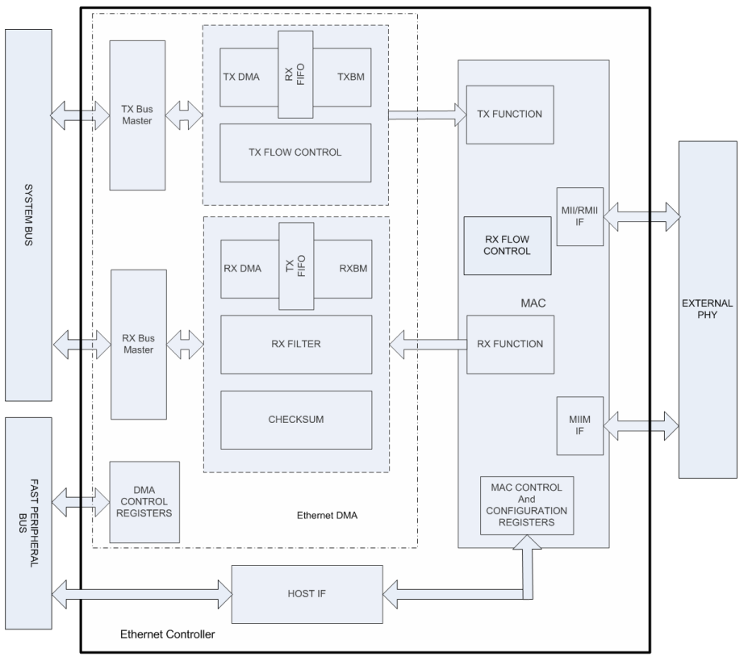

The Ethernet Controller provides the modules needed to implement a 10/100 Mbps Ethernet node using an external Ethernet PHY chip. The PHY chip provides a digital-analog interface as part of the Physical Layer and the controller provides the Media Access Controller (MAC)_layer above the PHY.
As shown in Figure 1, the Ethernet Controller consists of the following modules:
- Media Access Control (MAC) block: Responsible for implementing the MAC functions of the Ethernet IEEE 802.3 Specification
- Flow Control (FC) block: Responsible for control of the transmission of PAUSE frames. (Reception of PAUSE frames is handled within the MAC.)
- RX Filter (RXF) block: This module performs filtering on every receive packet to determine whether each packet should be accepted or rejected
- TX DMA/TX Buffer Management Engine: The TX DMA and TX Buffer Management engines perform data transfers from the memory (using descriptor tables) to the MAC Transmit Interface
- RX DMA/RX Buffer Management Engine: The RX DMA and RX Buffer Management engines transfer receive packets from the MAC to the memory (using descriptor tables)
Figure 1: Ethernet Controller Block Diagram

For completeness, we also need to look at the interface diagram of a representative Ethernet PHY. As shown in Figure 2, the PHY has two interfaces, one for configuring and managing the PHY (SMI/MIIM) and another for transmit and receive data (RMII or MII). The SMI/MIIM interface is the responsibility of the Ethernet PHY Driver Library. When setting up the Ethernet PHY, this Ethernet driver calls primitives from the Ethernet PHY Driver library. The RMII/MII data interface is the responsibility of the Ethernet MAC Driver Library (this library).
Figure 2: Ethernet PHY Interfaces

|
MPLAB Harmony TCP/IP Help
|